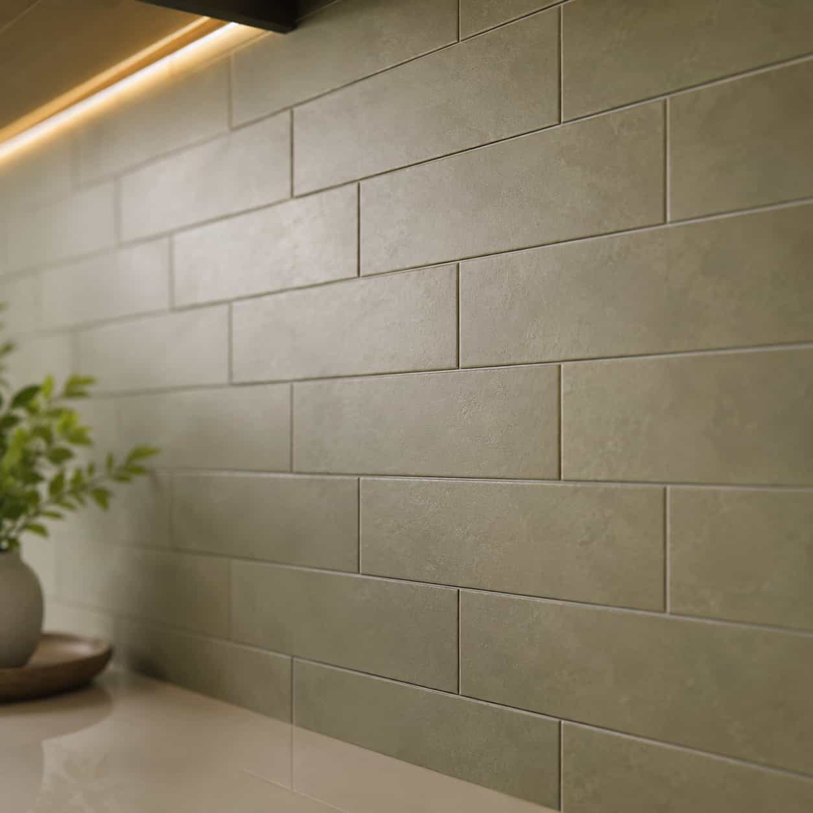
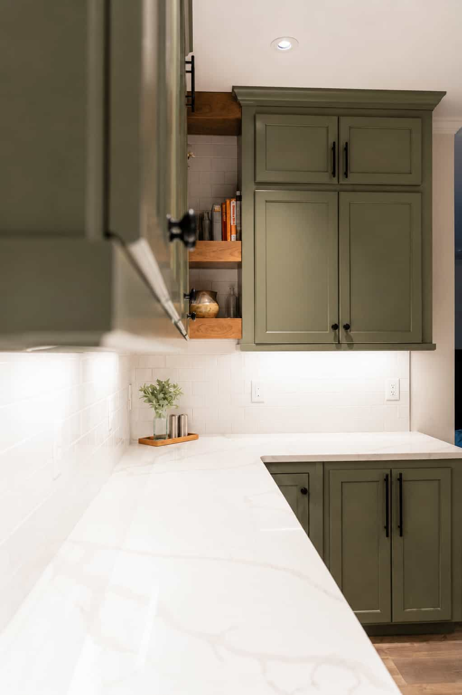
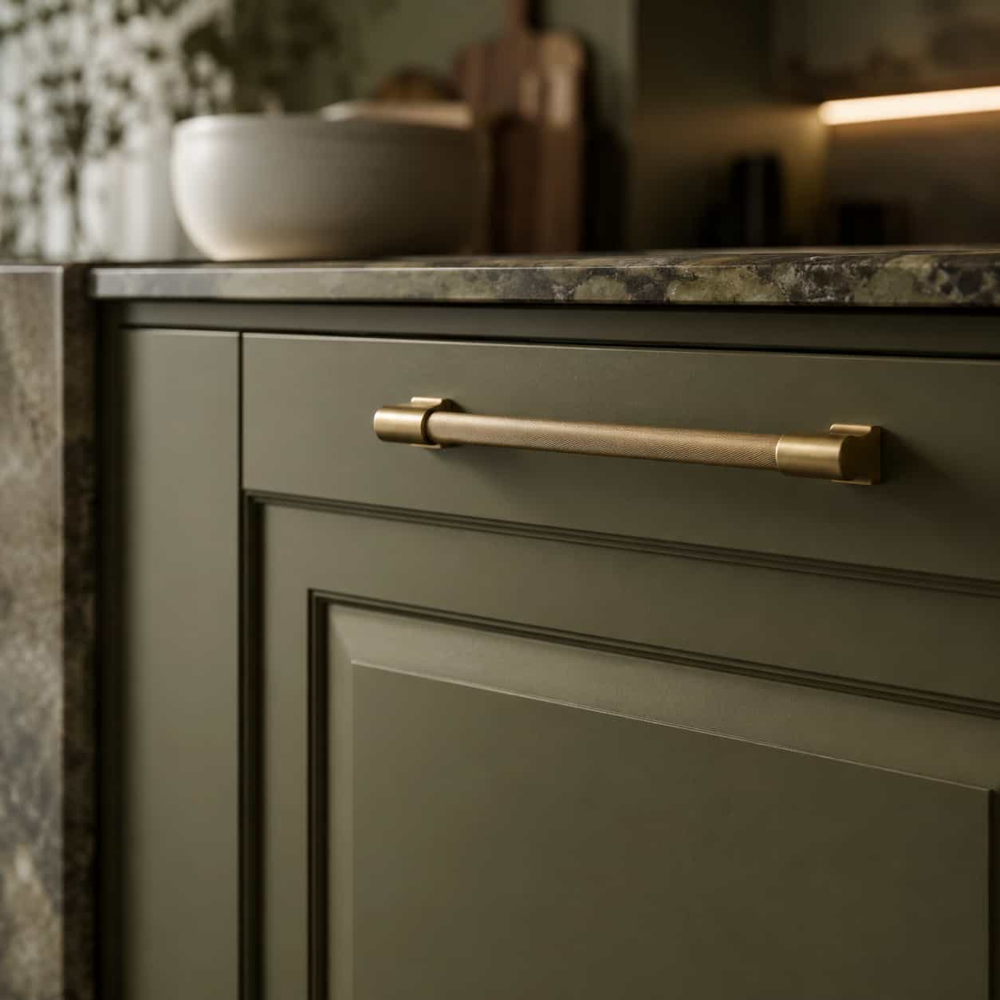

Project scope
Separate cabinets, countertops, tile, fixtures, and full remodel conversations.
Kavera helps homeowners compare independent kitchen remodeling provider options for cabinets, countertops, backsplash details, fixtures, and broader kitchen remodel scopes.
Kavera groups kitchen remodeling searches into four clear categories so homeowners can compare independent providers by scope, materials, and project fit.
Kavera does not perform remodeling work. Homeowners should verify licenses, insurance, quotes, timelines, warranties, and project terms directly with providers.
Kavera helps homeowners organize the kitchen provider search around scope, materials, quote clarity, timing, and direct provider verification.
Separate cabinets, countertops, tile, fixtures, and full remodel conversations.
Compare cabinet finishes, surfaces, tile, hardware, lighting, and substitutions.
Ask whether labor, materials, removals, measurements, and changes are separated.
Review site visits, ordering, access, installation timing, and project conditions.
Confirm license, insurance, warranties, provider terms, and responsibility directly.
Kitchen projects often depend on how clearly providers discuss cabinet finishes, countertop materials, tile surfaces, hardware, lighting, measurements, and quote details.

Ask how providers explain cabinet profiles, finish durability, hardware, storage upgrades, and material substitutions.
Compare cabinets
Review countertop materials, edge profiles, backsplash surfaces, sink areas, fixture coordination, and timeline expectations.
Compare surfacesKavera does not perform remodeling work. Homeowners should verify material terms, measurements, estimates, warranties, timelines, licensing, and insurance directly with each provider.
Kavera keeps the process lean: define the category, review independent provider options, compare estimate conversations, then choose who to contact directly.
Start with the service category that matches your project scope.
Compare independent companies that may fit the selected category.
Discuss materials, timing, quote detail, site visits, and project terms.
Move forward only after verifying details directly with providers.
Provider availability, estimates, warranties, scope, and timelines vary. Kavera helps with comparison structure, not direct remodeling work.
Start comparingThese are sample experience-style notes and comparison prompts. Kavera does not publish verified provider ratings and does not guarantee provider work, pricing, or timelines.
Cabinet, countertop, tile, fixture, and full remodel conversations are easier to compare when they are separated first.
Homeowners can ask providers about materials, measurements, quote detail, timelines, warranty terms, and project responsibility.
Licensing, insurance, estimates, warranties, and final project terms should always be confirmed directly with independent providers.
Helped us understand what to ask before comparing cabinet quotes.
We could separate countertop options from full remodel providers more clearly.
Start with your project scope, then review independent provider options and ask the right questions before moving forward.

Full view
Handle